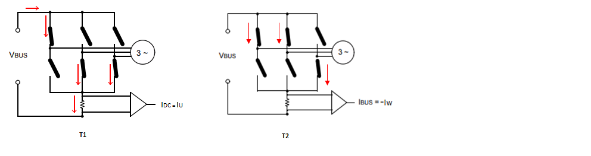
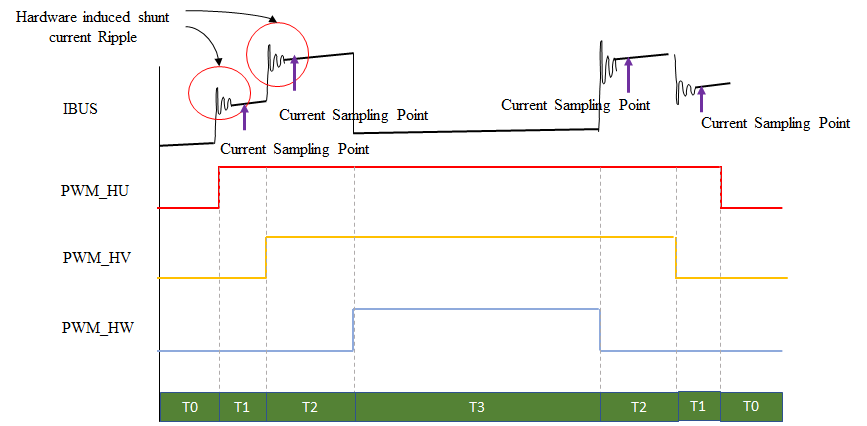
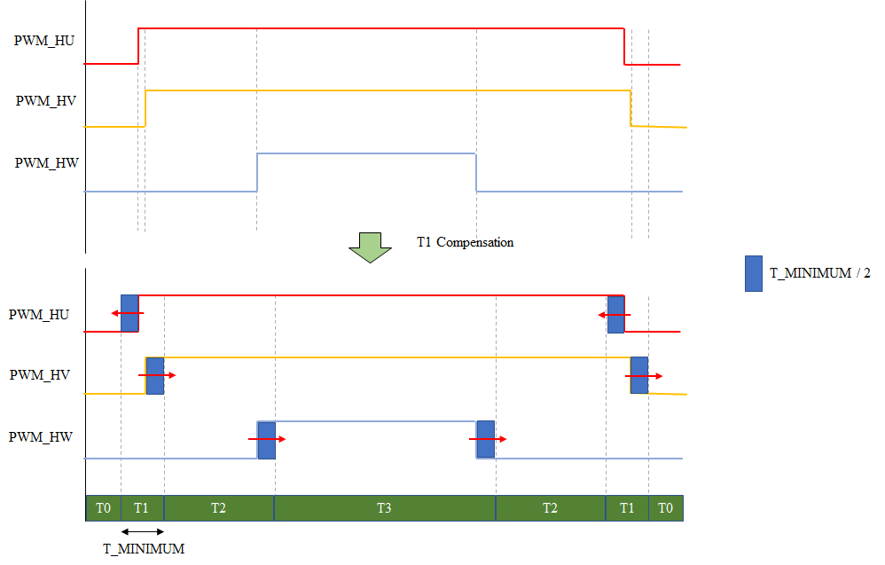
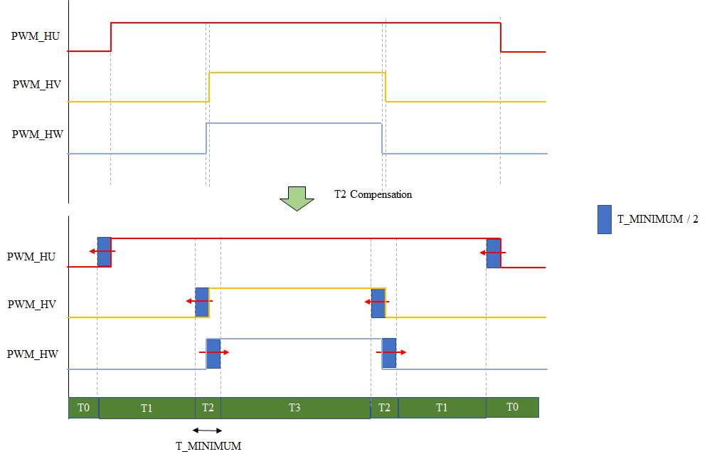
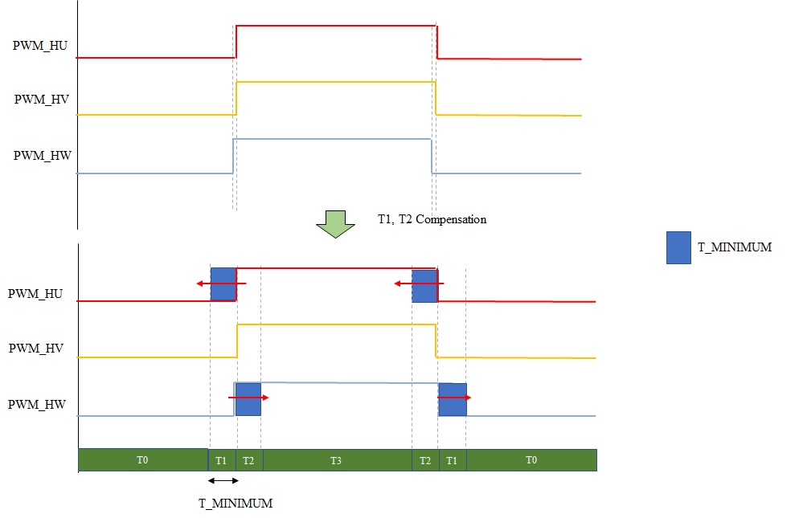
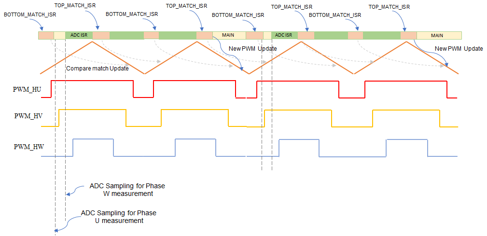
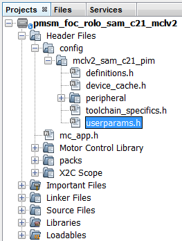

This application implements sensorless field oriented control (FOC) of permanent magnet synchronous motor (PMSM). It estimates rotor position from measured phase currents and a reduced order luenberger observer (ROLO). The algorithm is implemented on the SAMC21J18A MCU. The following section briefly describes the ROLO based sensorless FOC algorithm, software design and implementation.
Field Oriented Control is the technique used to achieve the decoupled control of torque and flux. This is done by transforming the stator current quantities (phase currents) from stationary reference frame to torque and flux producing current components in rotating reference frame using mathematical transformations. The Field Oriented Control is implemented as follows:
- Reconstruct the motor phase currents based on the DC bus current measurement.
- Transform the three phase currents from three phase stationary reference frame (u,v,w) into two phase stationary reference frame (alpha, beta) using the Clarke transformation.
- Estimate (sensorless) or measure (sensored) the rotor position angle.
- Transform the stator currents from a two phase stationary reference frame (alpha, beta) into a two phase rotating reference frame (d,q) using the Park transformation. The rotating reference frame rotates synchronously with the rotor axis and therefore requires rotor angle information.
- Clarke and Park transformation allows the transformation of three phase AC stator currents into an equivalent two phase DC currents which decouples the flux (id) and torque (iq) producing components of the stator currents.
- The stator current torque (iq) and flux (id) producing components are regulated independently by two independent PI controllers. These PI controllers generate an output voltage reference in d,q reference frame which is transformed into three phase stationary frame AC voltages using the inverse park and inverse clarke transformations.
- In order to increase the DC bus utilization, the three phase sinusoidal AC output voltages are translated into space vector modulated voltages and applied across the stator windings using a Three Phase Half-Bridge Inverter.
The following block diagram shows the software realization of the FOC algorithm.

Rotor Position and Speed Estimation:
The electrical rotor position is derived from back EMF voltage estimated by Reduced Order Luenberger Observer which is implemented in position_and_speed_estimation function. Back EMF voltage is a function of rotor speed. At lower rotor speeds, the estimated back EMF has poor signal to noise ratio and as a result does not provide accurate rotor angle estimation. Therefore, the FOC algorithm also integrates an open loop ramp-up profile for motor startup. The reference speed is incremented linearly until the required minimum reference speed is achieved such that the estimated back EMF has a high enough signal to noise ratio for accurate rotor angle estimation, at which point the algorithm uses estimated rotor angle for further control. For more details about ROLO, refer to Application Note AN2590.
Single Shunt Current Reconstruction:
The single shunt current reconstruction algorithm is used to estimate the three phase currents by using a single shunt connected across the DC link path.The DC link current input from the shunt resistor along with the knowledge of applied PWM at a particular instant of time, the three phase motor current is calculated as shown below:


The single shunt current reconstruction requires a minimum active vector time ( T1, T2 ) for shunt current to be stabilized before it can be sampled as shown above. To avoid shunt current ripples issue to creep into the ADC measurement, the calculated SVPWM is adjusted asymmetrically . Asymmetric adjustment of SVPWM for different scenarios is described below:
a. T1 is less than minimum time window for current measurement:

b. T2 is less than minimum time window for current measurement:

c. Both T1 and T2 are less than minimum time window for current measurement:

The implementation details of single shunt current reconstruction can be referred from the application note AN1299.
Software Design:
The following figure shows the flow chart of the implemented algorithm:

Field Alignment - ALIGN:
In this mode, a pre-defined value of the current is asserted across the Q axis of the rotor for a pre-defined length of time, in order to align the rotor to a known angle of 90 electrical degrees. The magnitude of the current and the length of the time for which it is applied depends upon the electrical and mechanical time constant of the PMSM motor drive. Electrical time constant of the motor is a function of R and L values of the motor windings, whereas the mechanical time constant of the motor drive is primarily a function of the static load on the motor shaft.
Open Loop Control - STARTING:
In this mode, the speed of the PMSM motor is gradually ramped up using an open loop control. During this mode, the rotor angle is derived from the asserted open loop speed reference. This derived rotor angle would be lagging from the actual rotor angle. The speed is ramped up linearly to a minimum value required for the ROLO-based estimator to estimate the alpha and beta axis back EMF of the PMSM motor with sufficient accuracy. Rotor angle information is extracted from arctan(BEMFbeta/ BEMFalpha).
Close Loop Control - RUNNING:
In this mode, the estimated rotor angle obtained from ROLO-based estimator is used to perform field oriented control of the PMSM motor.
Timing Diagram:
The three critical blocks of the MCU which are involved in the motor control operations are:
- ADC - It measures motor phase currents at the start of the PWM cycle.
- CPU - Based on motor phase currents measurements, the CPU executes the control algorithm to calculate the PWM duty cycle needed to apply required voltage across motor windings.
- TCC0 - It generates the PWM signals needed to apply required voltage across motor windings.
The following timing diagram, shows the chronological role played by the ADC, CPU and TCC0 in the execution of FOC algorithm.

Software Configuration:
The FOC algorithm is used across different application fields. In order to get the optimal control of the PMSM motor, the motor specific parameters, board specific parameters and application parameter macros have to be updated in the software. The following section describes how to update both motor and application specific parameters in the the project. These parameter macros can be found in userparams.h header file which can be found under logical path: Header Files > config > <config_name> >userparams.h in MPLABX IDE..

1. Setting motor control PWM frequency and dead-time:
PWM frequency is set by configuring the timer period of the TCC0 in terms of TCC0 clock counts. This frequency needs to be communicated to other sections in the algorithm by defining the "Period Value" (set in MPLAB Harmony Configurator) as a macro in userparams.h.
For example, in order to achieve a PWM frequency of 8KHz in center aligned mode with peripheral clock frequency of 48MHz, the period value defined in MHC is 3000.
Similarly, dead-time is configured in terms of TCC0 clock counts in the MHC. The same value needs to be defined as macro in userparams.h.
|
Macro |
Description |
|
PWM_HPER_TICKS |
PWM Timer period value = "Period value" defined in MHC |
|
DEAD_TICKS |
Dead-time defined in terms of PWM timer ticks = "Dead time value" defined in MHC |
2. Setting motor specific parameters:
Set the following motor specific parameters in the userparams.h file.
|
Macro |
Description |
Units |
|
MAX_FRE_HZ |
Electrical Frequency at maximum motor speed |
Hz |
|
MIN_FRE_HZ |
Electrical Frequency at minimum motor speed |
Hz |
|
POLAR_COUPLES |
Number of Pole Pairs |
- |
|
R_STA |
Motor per phase resistance |
Ohm |
|
L_SYN |
Motor per phase inductance |
H |
|
MAX_CUR_AMP |
Maximum motor current |
A |
|
START_CUR_AMP |
Current reference during field alignment and open loop startup |
A |
|
ACC_RPM_S |
Acceleration ramp rate |
RPM/s |
|
DEC_RPM_S |
Deceleration ramp rate |
RPM/s |
|
STUP_ACCTIME_S |
Open loop start up time |
s |
|
CUR_RISE_T |
Current rise time during field alignment |
s |
3. Setting board specific parameters:
Set the following board specific parameters in the userparams.h file.
|
Macro |
Description |
Units |
|
CUR_SGN_REV |
Define this macro, if the terminal of the shunt resistor connected to the return path of the inverter is connected to the inverting terminal of the signal conditioning differential operational amplifier. Do Not define this macro, if the terminal of the shunt resistor connected to the return path of the inverter is connected to the non-inverting terminal of the signal conditioning differential operational amplifier |
- |
|
AD_RBA |
Current measurement resolution of the board. This value is a function of shunt resistor, gain and bias of the differential opamp, reference voltage and the resolution of the ADC. For example, a board with a shunt resistance of 25 mOhm, differential opamp with a gain of 15 and bias of 1.65V, 12-bit ADC with reference voltage 3.3V, is capable of measuring +/- 4.4A i.e. a total of 8.8 A before ADC saturates. For such a board, AD_RBA = 4095/8.8 = 465.34 bits/A |
bits/A |
|
AD_RBV |
Bus voltage measurement resolution of the board. This value is a function of DC bus voltage divider ratio, reference voltage and resolution of the ADC. For example, a board with a DC bus voltage divider ratio of 1:16, 12-bit ADC with reference voltage 3.3V, is capable of measuring up to 52.8 V before ADC saturates. For such a board, AD_RBV = 4095/52.8 = 77.55 bits/V |
bits/V |
4. Setting current re-construction parameters:
The single shunt current re-construction requires precise current sampling to achieve desired current measurement accuracy. Following parameters are used to configure proper sampling points:
|
Macro |
Description |
Units |
|
SHUNT1_TMIN |
Minimum time window required for DC link current sampling. |
PWM timer counts |
|
SETTLING_DELAY |
Current measurement delay ( MOSFET turn-on time + Ringing settling time of current sensor ) |
PWM timer counts |
|
T2_SETTLING_DELAY |
Same as SETTLING_DELAY for T2 time window ( this can be different because of motor parameters ) |
PWM timer counts |
|
SAMPLING_DELAY |
Minimum time required for ADC sampling |
PWM timer counts |
|
MIN_SAMPLE |
Minimum time window required for DC link current sampling |
PWM timer counts |
|
MIN_SAMPLE_T1 |
Minimum T1 time window required for DC link current sampling |
PWM timer counts |
|
MIN_SAMPLE_T2 |
Minimum T2 time window required for DC link current sampling |
PWM timer counts |
5. Setting PI Controller parameters:
Depending on the type of motor used, and the corresponding application PI controller parameters should be updated in the userparams.h file.
Speed PI controller gains:
|
Macro |
Description |
|
KP_AS_R |
Proportional gain of speed controller |
|
KI_A_R |
Integral gain of speed controller |
Current PI controller gains for D and Q axis currents:
|
Macro |
Description |
|
KP_V_A |
Proportional gain for D and Q axis current controller |
|
KI_V_AS |
Integral gain for D and Q axis current controller |
6. Debug & Optimization Modes :
This example provides compile time re-configuration options using #define macro directives to enable or disable different debug and optimization modes. These macro directives can be accessed in the userparams.h header file.
- Current PI Tuning - CURPI_TUN
- This mode allows tuning of the Current PI controllers. This mode generates a step current reference and depending upon the actual current response, user can accordingly adjust current PI gains.
- This mode can be enabled by defining the macro CURPI_TUN in userparams.h header file
- In this mode, the step current reference is asserted across the D axis
- Macro CUR_STEP_AMP defines the step size of the asserted D axis current reference in amperes and macro CUR_STEP_TIM defines the length of the step in seconds
- Open Loop Mode - OPEN_LOOP_FUNCTIONING
- This mode is used to debug the open loop startup of the motor. This mode could also be used in tuning of Current PI controllers
- In this mode, the motor operates in open loop rotor angle mode. In other words, the rotor angle used by the algorithm to assert current will be different than actual rotor angle and therefore, the asserted current may not be orthogonal to the rotor magnetic axis, resulting in lower torque generation.
- This mode can be enabled by defining the macro OPEN_LOOP_FUNCTIONING in userparams.h header file
- The torque current reference in this mode is defined by the macro START_CUR_AMP
- Depending upon the load inertia and startup acceleration time (STUP_ACCTIME_S), if the generated torque is not sufficient, then it may result in stalling of the motor
- START_CUR_AMP and STUP_ACCTIME_S need to be modified to ensure that the motor starts up successfully in open loop mode without stalling. If the motor stalls and the PWM signals are shutdown, the algorithm enters into a critical fault mode. The MCU needs to be reset to recover from the critical fault.
- Torque Mode - TORQUE_MODE
- In this mode, as the name suggests, the algorithm operates in torque mode. The torque reference is obtained from the potentiometer.
- This mode can be enabled by defining the macro TORQUE_MODE in userparams.h header file
- The potentiometer min - max input is scaled to generate torque current reference in the range of TORQUE_MODE_MIN_CUR_AMP - MAX_CUR_AMP
- Depending upon the load, if the torque is too low then it could cause the motor to stall and algorithm to enter a critical fault mode. The MCU needs to be reset to recover from the critical fault.
- Executing from RAM - RAM_EXECUTE
- In order to speed up execution, the frequently called motor control related functions can be placed and fetched from RAM during execution.
- Fetching instructions from RAM is faster than fetching instructions from Flash, as fetches from RAM can occur at CPU clock speed, unlike the Flash, which requires wait states to be asserted.
- This speed optimization feature can be enabled by defining the macro RAM_EXECUTE in userparams.h header file.
- Enabling this mode would result in a larger data memory footprint.
- Instruction breakpoint will not be asserted on an instruction which is being executed from RAM. It is recommended to disable this macro while debugging this algorithm using instruction breakpoints.
- Exercise caution while using this feature as the functions in RAM are vulnerable to get overwritten due to stack overruns or unguarded buffer overruns.
|
Microchip 32-bit Motor Control
|